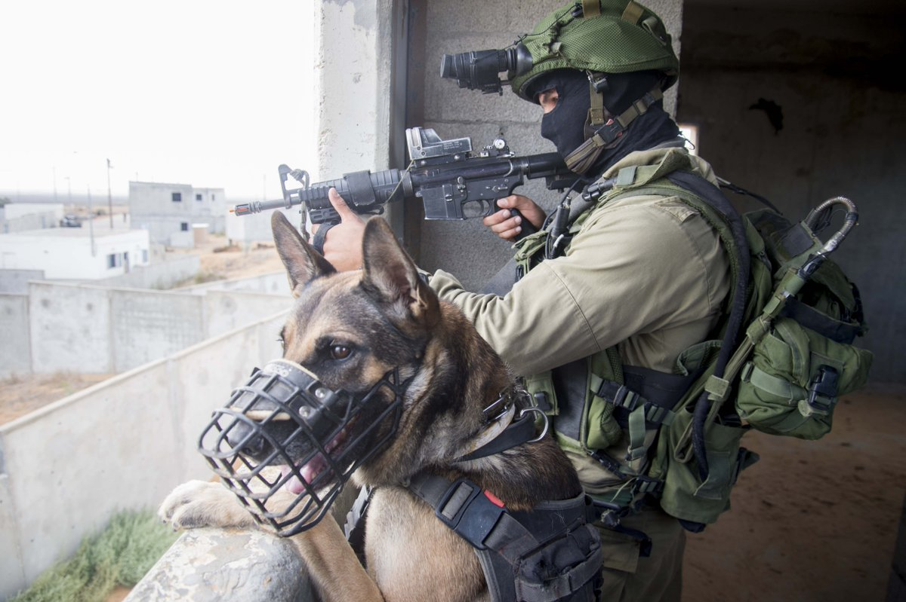
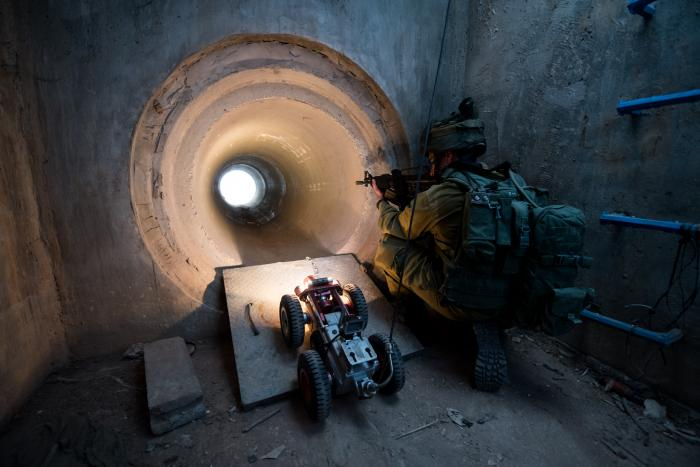
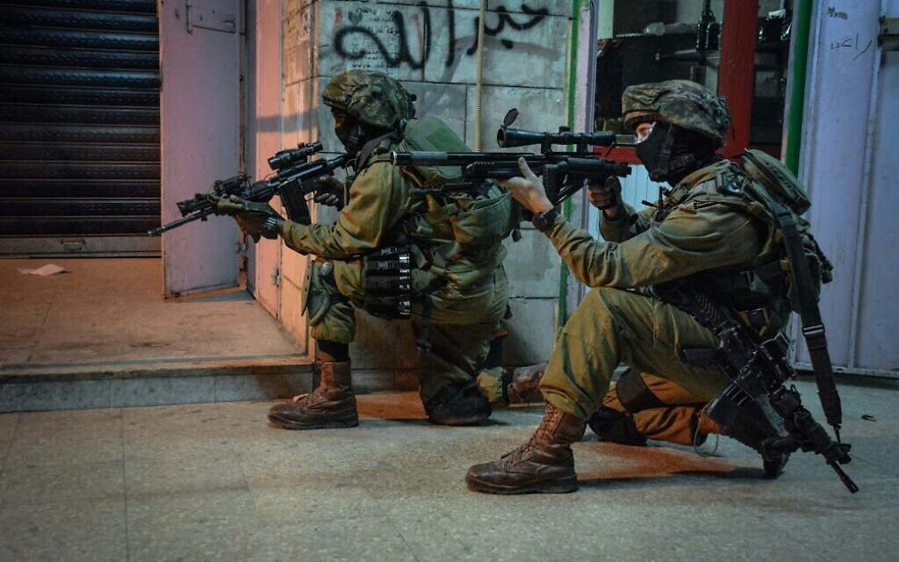

Special

Oketz Unit
Oketz (“Sting” in Hebrew) is the IDF's canine unit. It operates with specially trained dogs for missions in the field of counter-terrorism, search and rescue, and other specific purposes. The unit operates in all regions of the country. Joining the unit is voluntary and therefore soldiers undergo difficult selection and testing before joining the unit. Each dog is trained to have a specific specialty (attack, search and rescue, locating weapons, detecting explosives, etc.).

Yahalom Unit
Yahalom (Hebrew language: יהל"ם - יחידה הנדסית למשימות מיוחדות) is a special combat engineering unit of the Israeli Engineering Corps of the Israel Defense Forces. The name "Yahalom" (Diamond in Hebrew) is an abbreviation of "Special Operations Engineering Unit".

Duvdevan Unit
Unit 217, frequently called Duvdevan (Hebrew: דובדבן; lit. cherry) is a mista'arvim (undercover counter-terrorism) unit within the Israel Defense Forces, part of the Commando Brigade.
Duvdevan are noted for undercover operations in urban areas, during which they often wear Arab civilian clothes as a disguise.